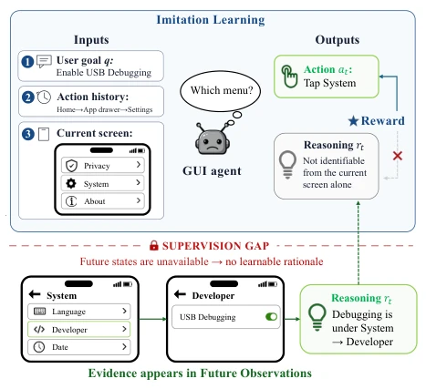
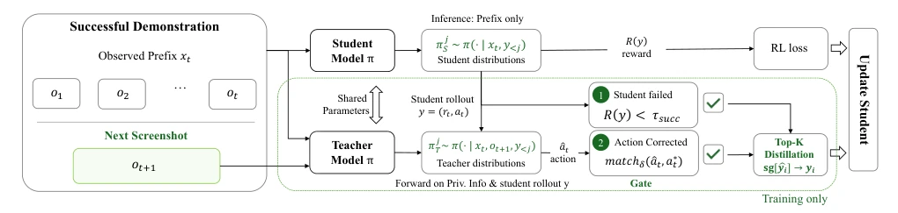
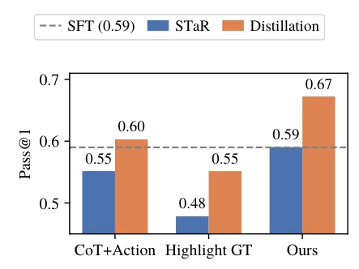

This paper provides a "special treat" for offline GUI agent training by treating the next-frame screenshot as privileged information. The authors keenly point out that standard imitation learning discards future states, leading to the model failing to learn "why" to click in this manner, merely guessing. The GHD method allows the teacher to teach the student with the answers, but only instructs where the student is wrong; this approach is quite clever, avoiding noise. However, this remains offline training; inference still relies on guessing and cannot be verified in real-time. Furthermore, it depends on successful trajectories; if the demonstration data itself contains pitfalls, the teacher cannot rescue it. In summary, it topped the leaderboard on AndroidWorld, but do not expect to see the future during inference; this counts as the last piece of meat extracted for offline data mining.
研究动机Motivation
现有 GUI 代理训练主要靠离线成功轨迹（Wang et al. 2024），通常分解为前缀 - 动作对。问题在于，判断动作正确性的证据往往出现在后续屏幕（Hu et al. 2026）。比如要开启某个设置，当前屏幕看不出，得点开菜单才知道。标准 RL 或 IL 只监督动作，不监督推理依据。在线训练成本高且易碎（Wu et al. 2026a）。因此，如何利用未来状态作为训练信号而不影响推理时的因果性，是关键痛点。现有方法如 GUI-Shift 虽利用未来状态，但需在线预测，增加了推理成本。
Existing GUI agent training mainly relies on offline successful trajectories (Wang et al. 2024), typically decomposed into prefix-action pairs. The issue is that evidence for judging action correctness often appears in subsequent screens (Hu et al. 2026). For instance, to enable a certain setting, it cannot be seen on the current screen; one must click the menu to know. Standard RL or IL only supervises actions, not the basis of reasoning. Online training is costly and fragile (Wu et al. 2026a). Therefore, how to utilize future states as training signals without affecting causality during inference is the key pain point. Existing methods such as GUI-Shift, while utilizing future states, require online prediction, increasing inference cost.

Figure 1: Supervision gap in imitation learning for GUI agents. Imitation learning directly supervises the predicted action (e.g., Tap System), while providing little explicit guid- ance for its reasoning. Since the evidence needed to con- struct an informative rationale often emerges only in future observations, the resulting rationale-learning signal is lim- ited, making grounded action reasoning difficult to acquire through the standard imitation-learning objective alone.
Proposes Gated Hindsight Distillation (GHD). The framework includes a student model and student trajectory; the teacher model shares parameters but additionally receives the next-frame screenshot $o_{t+1}$. During training, the student generates a rollout, and the teacher re-scores based on privileged information. A Gate mechanism is introduced: distillation occurs only when the student fails and the teacher can correct back to the demonstration action. The loss function combines GRPO and GHD distillation loss (Jensen-Shannon divergence). Additionally, there is a dynamic sampling strategy to increase the opportunity to obtain effective supervision. During inference, only the student model is retained. Specifically, the student observes prefix $x_t$, the teacher observes $ ilde{x}_t = (x_t, o_{t+1})$. Distillation is triggered only when the reward $R(y)$ of the student response $y$ is $< au_{succ}$ and the teacher's predicted action matches the demonstration.

Figure 2: Overview of Gated Hindsight Distillation. Given a successful trajectory, the student observes the interaction prefix (history o1, . . . , ot−1 and current observation ot), while a parameter-sharing teacher additionally receives the realized next screenshot ot+1. The teacher re-scores the student’s rollout under this privileged context. A gate retains distillation only when the student action fails and the teacher’s position-wise correction recovers the demonstrated action. At inference, only the prefix-conditioned student is used.
Tested on AndroidWorld and AndroidLab, using Qwen2.5-VL-7B and Qwen3-VL-8B. Baselines include SFT, GRPO, and GUI-Shift. Results show GHD significantly outperforms baselines on Pass@1. For example, the 7B model reaches 52.73% on AndroidWorld, while GRPO is 47.13%. Ablation studies show that introducing the next-frame screenshot brings the largest improvement (Table 4). Figure 3 shows distribution distillation outperforms STaR. Dynamic sampling also provides additional gains. Compared to GUI-Shift, GHD directly supervises main task prediction, with more direct effects.

Figure 3: Effect of privileged information and transfer mech- anism on AndroidWorld with Qwen3-VL-8B. The dashed line denotes the SFT result. We vary the teacher signal among the ground-truth reasoning and action (CoT+Action), the ground-truth target highlighted on the current screenshot (Highlight GT), and the realized next screenshot without access to the ground-truth action or rationale (Ours). For each signal, STaR generates a single corrected reasoning- action sequence as an off-policy maximum-likelihood target, whereas distillation matches the teacher’s token distribution along the student’s own rollouts. Distillation consistently out- performs STaR across all three signals. Combining the next screenshot with distribution distillation performs best, show- ing that both the privileged